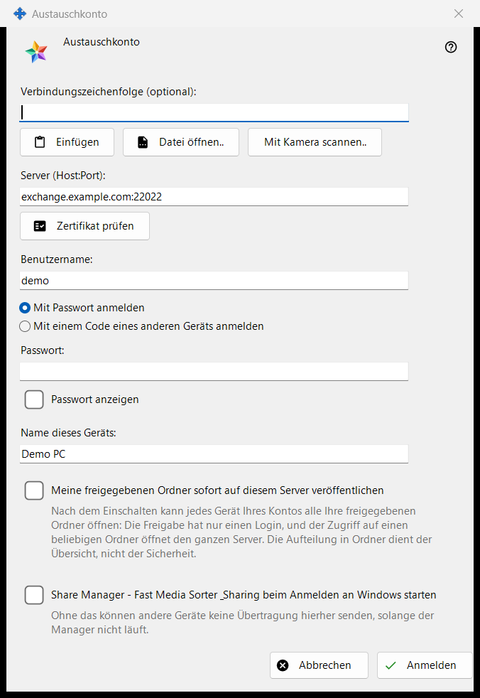
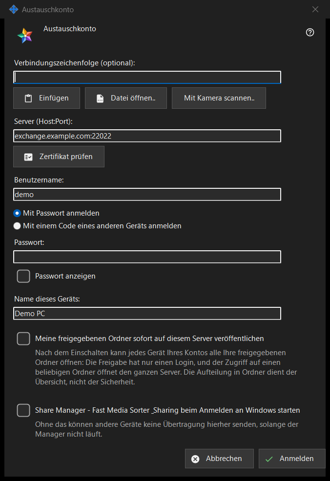

Austauschkonto
Verwendungszweck
Meldet diesen PC als Gerät eines Kontos auf einem Media Exchange Server an. Das Fenster öffnet sich über die Schaltfläche «Anmelden..» auf der Seite Austauschkonto der Einstellungen von Share Manager und über «Über einen Austauschserver veröffentlichen..», das es mit bereits angehakter Veröffentlichungsoption öffnet.


In dieser Reihenfolge
- Fügen Sie optional eine Verbindungszeichenfolge ein, öffnen oder scannen Sie sie; sie füllt Server und Login aus.
- Klicken Sie auf «Zertifikat prüfen»; vertraut das System dem Zertifikat nicht und stammt es nicht aus der Zeichenfolge, vergleichen Sie den Fingerabdruck mit dem des Betreibers und klicken Sie auf «Diesem Zertifikat vertrauen».
- Geben Sie Login und Passwort oder Kopplungscode ein.
- Legen Sie Gerätenamen und Optionen fest.
- Klicken Sie auf «Anmelden».
Die Elemente
Verbindungszeichenfolge
«Verbindungszeichenfolge (optional):» nimmt eine Zeichenfolge an, die Sie mit «Einfügen» einfügen, mit «Datei öffnen..» aus einer .fmsexch-Datei oder einem QR-Bild laden oder mit «Mit Kamera scannen..» einlesen. Sie füllt nur Server und Login aus; verbunden wird erst, wenn Sie auf «Anmelden» klicken. Eine Zeichenfolge mit Fingerabdruck legt dieses Zertifikat fest, sodass nichts von Hand zu vergleichen ist. Eine Zeichenfolge mit Einladung schaltet das Fenster auf Registrierung um. Eine unbrauchbare Zeichenfolge wird mit einer einzeiligen Ablehnung quittiert.
Server und Zertifikat
«Zertifikat prüfen» verbindet sich mit «Server (Host:Port):» und zeigt «Fingerabdruck des Serverzertifikats:» an. Vertraut das System dem Zertifikat, muss nichts festgelegt werden. Andernfalls vergleichen Sie den Fingerabdruck mit dem, den Ihnen der Serverbetreiber gegeben hat, und klicken auf «Diesem Zertifikat vertrauen»; nur diese Schaltfläche akzeptiert ein Zertifikat, das dem System unbekannt ist. Ändern Sie den Servertext, wird die Prüfung vergessen. Die Eingabetaste bewirkt nichts, solange kein Zertifikat als vertrauenswürdig gilt, sodass kein Passwort an einen Server geht, für den niemand bürgt.
Login, Passwort und Kopplungscode
Geben Sie «Benutzername:» ein und wählen Sie «Mit Passwort anmelden» («Passwort:», mit «Passwort anzeigen») oder «Mit einem Code eines anderen Geräts anmelden» («Kopplungscode:», ausgestellt von einem anderen Gerät desselben Kontos). Das Feld wird in dem Moment geleert, in dem sein Wert gesendet wird, egal mit welchem Ergebnis; das Gerät behält nur ein Token, nie das Passwort.
Registrierung per Einladung
Enthält die Zeichenfolge eine Einladung, weichen die beiden Anmeldeoptionen der Registrierung: «Das Passwort des Kontos:» und «Passwort noch einmal:» legen das neue Passwort fest, das die angezeigte Richtlinie erfüllen muss (mindestens 10 Zeichen mit einem lateinischen Groß- und einem Kleinbuchstaben und einer Ziffer), und die Schaltfläche heißt «Konto erstellen».
Gerätename und Optionen
«Name dieses Geräts:» (bis zu 64 Zeichen) beginnt mit dem Computernamen. «Meine freigegebenen Ordner sofort auf diesem Server veröffentlichen» ist ausgeschaltet, außer Sie sind über «Über einen Austauschserver veröffentlichen..» gekommen; ist es eingeschaltet, kann jedes Gerät Ihres Kontos alle Ihre freigegebenen Ordner öffnen, weil die Freigabe nur ein Login hat. Die letzte Option startet Share Manager, wenn Sie sich bei Windows anmelden (standardmäßig aus), damit andere Geräte Übertragungen an diesen PC senden können.
Ein Server zugleich
Ein Gerät gehört zu einem Server. Wer sich an einem anderen anmeldet, wird gefragt, ob er den aktuellen verlassen will, und die Veröffentlichung auf dem alten Server endet. Nach einem fehlgeschlagenen Kontaktversuch öffnet die Schaltfläche «Warum verbindet es nicht?..» den Verbindungstest.
Managereinstellungen · SFTP-Freigabeeinstellungen · Einstellungen des Austauschservers